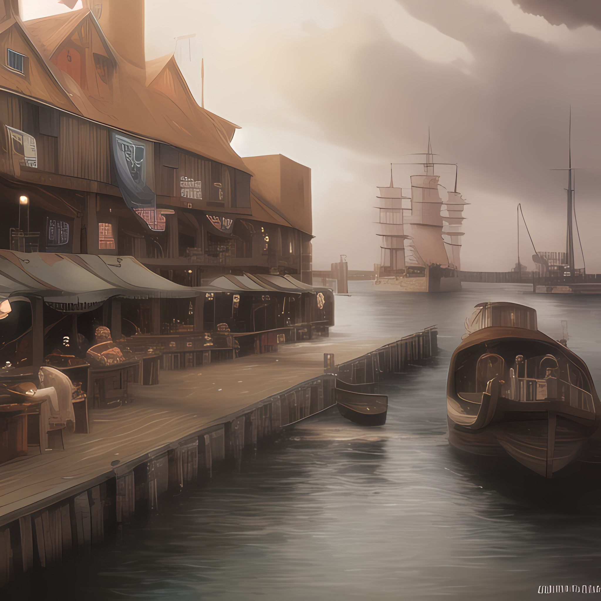

Portland | City
Portland
Description
Classes in Dark Souls determine the starting Stats and Equipment of the player. There are 10 Classes in Dark Souls that the player can begin the game with. They are listed below:
Classes do not determine what weapons, items, armor, or spells your character is able to use, they only determine what your character starts the game with. As you progress through the game and raise your levels, your character can potentially take up any role regardless of class.
In addition to choosing a class, players can choose a gift to begin the game with. All gifts can be found in the game later on, but taking one here can let the player enjoy a benefit they wouldn't normally have until much later. A first time player should be careful about choosing gifts that will let them enter end-game areas from the start of the game such as the Master Key, since they could potentially end up stranded in a very difficult area without the knowledge or equipment to get back out. Note that the Master Key is infinitely reusable, and the Thief starting class begins the game with one already. Taking a second Master Key as a Thief is a waste of a gift.
The cost of raising a level increases as your character's level increases. The amount of souls each level costs is the same for all classes, though classes begin at different levels. For example, a character that starts at level 1 may find leveling up to be extremely affordable, but the character who starts at level 10 didn't have to pay anything to get to that point. When the level 1 character reaches level 10, going from 10 to level 11 will cost exactly the same amount of souls as it would for the character who started at level 10. Because of this, starting at a lower level actually ends up costing more overall, however the player will be able to put their stats exactly where they want them instead of starting with a more pre-determined kit. The starting level of a character ignores the Resistance stat, so characters with high resistance start at lower levels than they would normally have otherwise.
List of NPCs That Live in Portland
| Name | Age | Race | Sex | Occupation | Notes |
|---|---|---|---|---|---|
| Allen Smallhammer | 39 | Human | Male | Blacksmith | Father of Mia Smallhammer |
| Clyde | 60 | Human | Male | Soldier: Retired | Lionore's teacher |
| Gork Mcdork | 35 | Half-Orc | Male | Butcher | Doesn't believe anyone that tells him he is a half orc. Fiery orange facial and hair |
| Higgin bothom | 43 | Human | Male | Mayor | Thinks he is in control but is easily manipulated. Has a lisp. |
| Horatio Mcalister | 32 | Human | Male | Ship Captain | |
| Mia Smallhammer | 18 | Human | Female | Blacksmith Assistant | Daughter of Allen Smallhammer |
| Poncho Knotter | 22 | Human | Male | Fisherman, Sailor | Lionore's Best Friend |
| Rhye Neverise | 25 | Human | Male | Baker | Fierce alcoholic |
| Susan | 61 | Human | Female | City Council Member, Town Librarian | The town librarian even though there are only like 5 books one of which is a book of records of all 3 generations that lived in port land. |